Wrap-Up
Story recap
Hunt philosophy
Writing the hunt
Reflections
Credits
Appendix
Firstly, we would like to congratulate the
- 348 teams who finished at least one puzzle,
- 276 teams who found Waldo (the round 1 meta not the round 1 puzzle lol),
- 151 teams who wished the Olympians well in Los Angeles and finished the hunt, and
- 37 teams who finished the hunt hintless!
The race to the finish was incredibly close yet again, with the same top 2 teams from Puzzle Rojak 1 working on the metameta at the same time (how's that even possible?!). Thanks for keeping us on the edge of our seats!
In the end, ⚯ MISSING PERSON'S GLASSE—WAIT, AGAIN? ultimately took the victory once again in 9h 5min. The top 3 teams finished the hunt within 30 min of each other, and there was a very sizable almost 12h gap to the 4th team finishing, which really speaks to the strength of the top 3 teams!
Congratulations also to i think the hot yoga thing is p good if we're still undecided on team names lol who was the first to finish Round 1 in 52min 9s!
We also want to give a shoutout to Ember Island Puzzlers for finishing the hunt with only 1 incorrect guess!
Thank you to everyone for joining us for Puzzle Rojak 2!
Story recap
Puzzle Rojak 2 starts off just like Puzzle Rojak 1: Waldo has gone missing again, with exactly the same story as in 2021, and your group of friends go hunting for Waldo.
We find out that Waldo is ALONE IN PAIRIS, and has gone to the 2024 Paris Olympics (the last one being Tokyo 2021). He goes to help the Olympians out, and we find that they need an ENGINE AND TONIC, a PEAKCCOLO, a TACO DUMBBELL and an IGLUE to do better. Finally, to those who did not do well in Paris 2024, Waldo offers them words of encouragement for the Los Angeles 2028, since THERE’S NO LOSS IN LOS ANGELES.
Hunt philosophy
Puzzle Rojak 2 made many changes from what we learnt from running Puzzle Rojak 1. This section details why these changes were made.
Overall goals
Puzzle Rojak is a mid-sized hunt that offered a bit more meat compared to smaller hunts, without being overly tedious or long. We strive very hard to nerf puzzles that were unnecessarily long, and have an overall balance of puzzles while including some harder outliers that wouldn't feel out of place in longer hunts. Puzzle Rojak 2 should have taken teams longer compared to Puzzle Rojak 1, while feeling equally interesting.
Solving policy
Puzzle Rojak 2 took place over 3 weekends instead of 2 like most other large-ish hunts. We wanted more teams to see the whole hunt, and increasing the duration definitely helped with this. This also enabled us to write a longer hunt with more puzzles and have Round 2 puzzles that were slightly longer.
It also allowed us to support giving hints better. With Puzzle Rojak 2 being 3 weekends, more hints will be given to teams over the course of the entire hunt. We also explicitly mentioned in the rules that we would be pretty lenient with hints. In Puzzle Rojak 1, we received a huge influx of hints whenever hints were released and in the last hour of the hunt. Especially in the last hour of the hunt, we just could not keep up with the hint requests. We wanted to avoid that happening again. At the same time, we did not want to increase the number of hints released per day, as we saw that no team actually finished using all their hints, and it was more an issue of answering in a timely fashion when we received a huge influx of hints at once.
Unlock structure was made more friendly to teams. Puzzle Rojak 1 had feedback that the unlock structure was quite tight, especially at the start of the hunt when only 3 puzzles were available. Puzzle Rojak 2 had 5-8 puzzles unlocked at once. This does not guarantee teams will not be bottlenecked (in fact with the Communiter round, Round 2 at some point will get a bit tight, intentionally, so as to force teams to complete more of the puzzles related to the Communiter round) but this helped reduce the issue of bottlenecks, and in general for all testsolves, teams did have puzzles to constantly work on.
Answer submission policy
Answer submission attempts were increased to 15 per puzzle. In the last hunt, we had to increase the count for 2 puzzles for 2 different teams, and Sea Cave had a rather finicky cluephrase. We took lessons from those puzzles from Puzzles Rojak 1, and while we did not expect any puzzle to need more than 10 answer submission attempts for Puzzle Rojak 2, we felt that this decision was best left with the team, and hence increased the limit slightly to give more leeway.
Some guesses from Puzzle Rojak 1 were for the cluephrases rather than the actual answers. As such, for Puzzle Rojak 2, we mentioned directly in the puzzle if it checked any intermediate cluephrases.
Difficulty
We introduced a separate Round 1, with easier puzzles. There weren't too many such puzzles in Puzzle Rojak 1, which was not ideal, and we wanted puzzles targeted specifically at less experienced teams.
In 2021 when Puzzle Rojak 1 ran, this was the rough graph of hunts then.
In 2023, the last big hunt that ran was Huntinality 3, looking at the same stats from the hunts in the past year:
In general, there are way more hunts in the 5-10h top finisher time, with a healthy number of teams finishing in the first 2 days. What this graph doesn’t really show is the number of easier puzzles in hunts, which seems to actually be decreasing. With the exception of Huntinality 3 and CMU Spring 2024 which had mushroom/fish puzzles in the second round, in general hunts in the last few years are either all easier puzzles, or are generally harder puzzles, where even round 1 puzzles aren’t the easiest. Puzzle Rojak 2 intentionally wrote a very long round 1, with some puzzles like I Know My 123s at the end of Round 1 and Zebra Puzzle/Shapes at the start of Round 2, to nicely bridge the difficulty gap. With slightly fewer puzzles in Round 2 as well as Puzzle Rojak 2 being 3 weekends this time, we felt that we could afford to write a Round 1 filled with easier puzzles.
Writing the hunt
We basically had a team of 2 writing for this hunt (again?!), with 1 extra guest writer contributing a puzzle as well. In total, this hunt took about 2 years to plan.
Initial conceptualization
I (Jon) always wanted to write Puzzle Rojak 2. I had about 5 puzzle ideas that could not make Puzzle Rojak 1 due to how long the answers were then, but I also felt that Puzzle Rojak 1 was unpolished in some ways, and wanted to take what we had learnt to write another hunt. Aki was unfortunately busy this time, and could not help out with puzzle writing, however, he did participate in the initial conception of the hunt theming, and came up with all the meta puns for us. Luckily, Xue Heng, who wrote Internet Cafe in Puzzle Rojak 1, had more time and volunteered to help out with puzzle writing. With more experience, we strove to write metas that had shorter answers, have more rounds of testsolving, and provide a better hunt experience in general.
Metas
There were some comments in Puzzle Rojak 1 about how long the meta payoff was, and some teams never got to see a meta. This hunt has a similar problem in round 2, however, the first meta for round 2 can be unlocked in as early as 11 solves (Citius), and the Communiter round aha should be interesting and reachable in roughly 7-9 solves as well, so hopefully teams got to experience something new at a faster pace in this hunt. I (Jon) do not like the idea of overweighting the meta that is last to unlock, because often teams will be stuck on that one last meta before getting access to the metameta. The Communiter round had the easiest meta specifically because of this.
Having the Communiter round meant that whenever changes were made in 1 puzzle, often another puzzle was affected, which impacted rewriting time, which felt way longer for this hunt as compared to Puzzle Rojak 1. (refer to the Communiter meta notes for more discussion on this topic). We had budgeted more time more testsolving for Puzzle Rojak 2, and ultimately had slightly over a month left to spare to just eagerly wait for the start of the hunt.
Puzzles
One thing we were very mindful about was how hunt difficulty creep seemed pretty significant for successive iterations of a puzzle hunt. The overall difficulty ramp seemed better for Puzzle Rojak 2, where Round 2 had quite a few easy/more approachable puzzles (Shapes was a pretty standard mangled clues, Zebra Puzzle was a Einstein puzzle and a Yin Yang puzzle, Taskmaster was a straightforward submission puzzle, etc). That said, we did also have longer puzzles in general in this hunt as compared to Puzzle Rojak 1. This was hard to avoid, as we tried to balance having interesting puzzles with having puzzles that were easy to break into and at the same time were short. We did strive to keep puzzles shorter where possible though!
We also relooked Puzzle Rojak 1 feedback when writing this hunt. There were 2 groups of puzzles that stood out to us as being fun to solvers. The first was those that tried to simulate an actual activity:
Dock - coloring flags
Go-Karts - racing on a track
Concert Stage - stepping in DDR
and the other was those that taught solvers something and got them to apply it in some way:
Shallow Waters - applying Hamming Code
Drop Tower - learning about color transformations and applying them
We definitely tried to lean into this and write more of such puzzles when writing this hunt, for the former:
Ups and Downs - playing a game of Snakes and Ladders
Pic-Tac-Toe - playing tic-tac-toe
Fast Time - playing a game of Rush Hour
Jenga - playing Jenga
Slide Away - slide puzzles
And for the latter:
Knaves and Knights - applying odds and evens
Find Waldo - finding Waldo substrings in other hunt
Segmented - figure out letter segment mappings to letters
Measuring Kurrent - figuring out mapping of colors to Mario Kart tracks
Six Flags - reapplying known transformations
To a lesser extent, the whole Communiter round had to do with reapplication of what teams learnt from earlier puzzles.
Post-hunt update: We definitely heard many nice things about these puzzles, and all the puzzles listed above had high fun ratings, which really shows how much these kinds of puzzles are loved by the community!
In Puzzle Rojak 1, 21/26 of our puzzles had at least 1 person comment in the post hunt survey that they liked that puzzle, which was really gratifying to us that our individual puzzles spoke to different people. Hopefully the diversity of puzzle types in Puzzle Rojak 2 was interesting to everyone as well.
As a writing team, we like the spotlight of our hunt to be on the process of solving our puzzles, and letting solving teams derive the ahas by themselves is a large part of this process. Because of the Communiter round, timed unlocks were very tricky to manage in this hunt. We worried quite a bit internally about teams running into a wall of tough puzzles around the 5-9 unlocks range in Round 2, but at the same time really wanted teams to spend some time thinking about the Communiter puzzles before being given the gimmick with the Disney puzzle, and we really hope that extending the hunt helped more teams at least get to the Communiter round aha.
Jon: I did not write the Mario Kart puzzle, nor the Chinese puzzle in this hunt (which somehow featured the zodiac again as well). At one point maxwheel wanted to write a chess puzzle too! Seems like we just love the same topics. In general though, we are very proud of the variety of puzzles in this hunt, which spanned a huge range of topics and difficulties. Hopefully there was something for everyone!
In terms of puzzles we have not written about in 2 iterations of Puzzle Rojak, I would really have liked to write interactive puzzles. Our tech team is basically nonexistent, and while I did have an escape room-like idea I wanted to write about, in the end I decided time was better spent elsewhere. If we ever do write a Puzzle Rojak 3 I might consider writing such puzzles.
XH: I was pleasantly surprised that Jonathan and I never really experienced a “clash of topics”, in the sense that we just wrote puzzles whenever ideas came to us and somehow ended up with a spread of puzzles that covers a wide range of topics, and without an over-emphasis on any topic. I would’ve liked to write a math puzzle, a puzzle on substitution ciphers, a konundrum, and a text adventure (probably get my friend to help do the coding for me; I had to rely on him to write a function to compute the number of moves for Slide Away), so maybe these will appear in the future. I’m happy that Jonathan covers the geography, books/movies, english pop music and crossword departments, which are topics I probably wouldn’t have touched. Speaking of crosswords, I still have no idea why I wrote segmented, as I hardly even do crosswords when they appear in hunts.
I generally enjoy writing easier puzzles, partly because I like introducing puzzle hunts to my friends as I can go "hey, this is something I've written, you can try it if you like and don't worry it won't take 9 hours and 99 intuitive leaps". The added benefit is that I can get a beginner's feedback on a puzzle, which doesn't usually happen during test solving as most test solving runs are done with experienced teams. Even as many hunts are being written and ideas taken up, I do believe that it is still very possible to write simple, elegant, single-aha puzzles that feel just as satisfying as their more complicated and longer counterparts. Difficulty creep is a real thing and it has been quite some time since I last seen hunt puzzles whose difficulty levels are comparable to that of Reddot Hunt 2017/2018's round 1 puzzles, which I enjoyed immensely. If we ever host a Puzzle Rojak 3, I will strive to include a non-negligible amount of easier puzzles into the mix.
Major milestones
Oct 2021 First puzzle for this hunt was written (Animals)
Dec 2021 Round 1 meta idea was written during Puzzle Rojak 1
May 2022 Round 1 meta answers were confirmed with the theme of Olympics
Sep 2022 R2 metas written
Oct 2022 First Communiter puzzle (I Know My Patterns) written
Apr 2023 Stronger meta was reworked with 1 puzzle already written
End Oct 2023 All puzzle ideas confirmed
Nov 8th 2023 All puzzles for first r2 meta (higher) fully written
Nov 23rd 2023 We ran 2 testsolves in parallel with 2 strong solo solvers, which revealed serious issues with 1 round 1 puzzle (that needed to be scrapped), 1 round 2 puzzle that could do with reworking (The Case of the Many Blanks) and some issues with Communiter triplets
Feb-Apr 2024 We ran 4 full hunt testsolves. By the third testsolve (first Cardinality group on Apr 6th weekend), there were multiple small issues and presentation suggestions but no huge rewrites needed.
We had around 1.5 years for Puzzle Rojak 1, but 2.5 years for Puzzle Rojak 2. We effectively wrote most of the puzzles in Puzzle Rojak 1 in about 4 months, and over a year for Puzzle Rojak 2. We had about 2 months from the first external testsolve to the start of the hunt in Puzzle Rojak 1, and we had 6 months for Puzzle Rojak 2. We had officially 3 testsolves for Puzzle Rojak 1, and 6 for Puzzle Rojak 2, 4 of which were full hunt testsolves.
Quite a few puzzles in Puzzle Rojak 1 were a bit difficult to break into or solve, e.g. Sandwich Bar, Jetty Creatures and Sea Cave. We think a part of that was down to needing another round of testsolving that we did not have time for in Puzzle Rojak 1. We strived very hard this time to get more testsolving to make sure our puzzles were fair to solvers (40 spaces, Islands, The Case of the Many Blanks, and Jenga were tweaked multiple times to make starting these puzzles easier).
Hunt operations
Tech infrastructure I (Jon) took over the tech side of Puzzle Rojak 2. Hunt tech is really tedious, and I admire everyone working on tech for all the larger hunts. Our art team is also non-existent, which explains the clip-art/paint-like drawings for our story and puzzles.
We are still using the 2020/2021 version of GPH-site, and so some of the later improvements like notifications when hints are answered, are not implemented. While we saw value in these changes, it was more urgent to get testsolving tried on the site itself, and later on we did not think it was worth the potential hassle to get all the updates done.
Hinting With our small team, we were always going to face some issues. Puzzle Rojak 1 hinting was very rough, and we reached out to testsolvers for more help with hinting as well. We had some extra help thanks to Dawson Do, Ryan Thomas and Tim/Soni who graciously agreed to help with hinting, who really helped make giving all these hints possible!
Reflections
Length and difficulty
| Hunt | # Puzzles | Fastest Finish (h) | # Finishers in first 2 days | Total Finishers | Number of teams who solved at least 1 puzzle |
| Puzzle Rojak 1 | 30 | 7.45 | 24 | 83 | 291 |
| Huntinality 2.0 | 39 | 8.9 | 21 | 116 | 473 |
| Exploring the Countryside | 26 | 10.87 | 8 | 83 | 308 |
| Shardhunt | 30 | 8.57 | 19 | 103 | 325 |
| Huntinality III | 36 | 7.95 | 46 | 173 | 580 |
| Puzzle Rojak 2 | 43 | 9.08 | 32 | 151 | 348 |
Puzzle Rojak 2 was definitely longer than most mid-sized hunts, but had a lower difficulty as compared to most mid-sized hunts. There were 99 teams who finished by the second weekend, and 325 teams who solved at least 1 puzzle by the second weekend. As mentioned earlier, we wanted Puzzle Rojak 2 to shine in the easier Round 1 puzzles as well as have a gentler difficulty curve, while having some longer puzzles, and we felt we really achieved that.
Our fastest testsolving team finished Round 1 in 1.5h, and the hunt in around 1.5 days. 11 teams finished Round 1 in under that time, with the top 2 finishing the first meta in 52 min and 54 min respectively. These times are incredible. We similarly were expecting the fastest team to finish the hunt to take over 10h, and were very impressed by the top 3 teams who comfortably finished under that. There was a very large gap between the 3rd and 4th team finishing time (with the 4th team finishing around 12h after the 3rd), which apart from teams probably being asleep, points us to the fact that this hunt was indeed pretty long, and that the top teams are incredibly strong! We think our difficulty approximations were accurate though, with a healthy number of teams finishing the hunt in the first weekend. To this end, we definitely feel like we had a good range of puzzles that met our overall goals really well!
Puzzle balance
We looked at the survey responses to judge how fun our puzzles were. For simplicity, a “fun” puzzle is any puzzle with a fun rating of above 5 (out of 6), and a “not so fun” puzzle is any puzzle with a fun rating of below 3 (out of 6).
(Many hunts have stopped using surveys for individual puzzles. One survey feedback went “but it left me with a bad impression. Which is what happens when you ask for feedback before releasing answers.” And that is indeed true, both in Puzzle Rojak 1 and Puzzle Rojak 2 we got some strange feedback, one team claimed Jenga wasn’t unique, one team said EVPBPURG for Six Flags was a red cross transformation (when the puzzle states EVPBPORG), and this doesn’t even include some of the more nasty and mean comments. However, we think that there is value to individual puzzle surveys. One unexpected use was when Edible Comestibles of /r/PictureGame caught the first errata of Puzzle Rojak 2 in Chemistry Test and gave that feedback to us via the survey, less than an hour into the hunt! More importantly, we think there is value in seeing what teams are thinking just as they finish a puzzle, and if we could have done better in certain puzzles we often get feedback through this channel (refer to the section on individual puzzle discussions below), and on the flip side, the most effusive praises come in these feedback forms as well. Thank you to all the very nice comments everyone sent on the puzzles!
Numerically the scores themselves are very subjective as well, some teams never give 6s to any puzzles, and puzzles do not cater to everyone, so there will always be a couple of teams tanking the scores of a puzzle. (If you want proof, just look at Go-Karts in Puzzle Rojak 1, I (Jon) still think it is criminal how it didn’t get an average fun score above 5) Only 1 puzzle in Puzzle Rojak 2 had all teams giving it a fun rating of at least 3, putting it another way, every puzzle but 1 in Puzzle Rojak 2 had at least 1 team giving the puzzle a 1 or 2 for fun, which really shows how hard it is to make something universally loved. All of which is to say that getting a high average score is difficult, and we are glad to see how much everyone enjoyed the puzzles in this hunt! If anyone is interested, puzzle ratings can be found in the bigboard.)
Round 1 52 instructions was rated not so fun. Almost all of the Round 1 puzzles had comments about how they were fun/wonderful/interesting, which was really nice to read about. Most teams enjoyed the Round 1 puzzles, which was great to hear :) We think the difficulty and length was also well measured, all puzzles had a fastest solve time of under 12 minutes, with about half of them having fastest solve times of under 5 minutes. We are very proud of how well our Round 1 puzzles turned out!
Round 2 I Know My Patterns was rated fun, and there were no not so fun puzzles. We tried really hard to have a variety of puzzles in Round 2, and to have interesting puzzles. We had a puzzle which had a fastest solve time of under 5min (40 spaces), and a puzzle which had a fastest solve time of almost 4.5h (Jenga). Our Round 2 puzzles not having any not so fun puzzles in this hunt is a great sign that the puzzles were well received!
Metas Fortius and Looking Back, Looking Forward were both rated fun (the metameta had very few survey responses though). Puzzle Rojak 1 had very simple metas, and we got feedback from some teams that they were too easy. We tried to have a wider range of meta types and difficulties for Puzzle Rojak 2 (a word one, a logic one, a pure meta), and the feedback was pretty positive. For Fortius in particular, we signposted every step to ensure that it was very fair for all teams. We heard lots of good things about the Round 2 metas in particular, and the metas in this hunt definitely turned out really well!
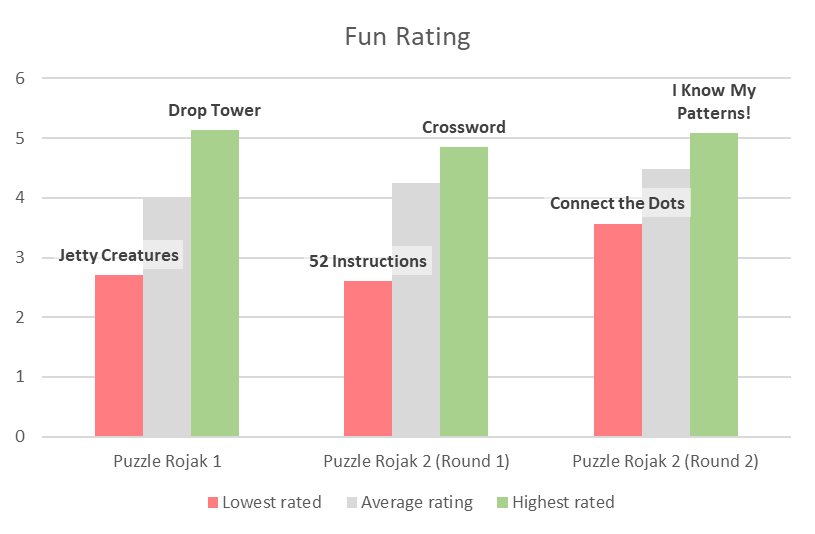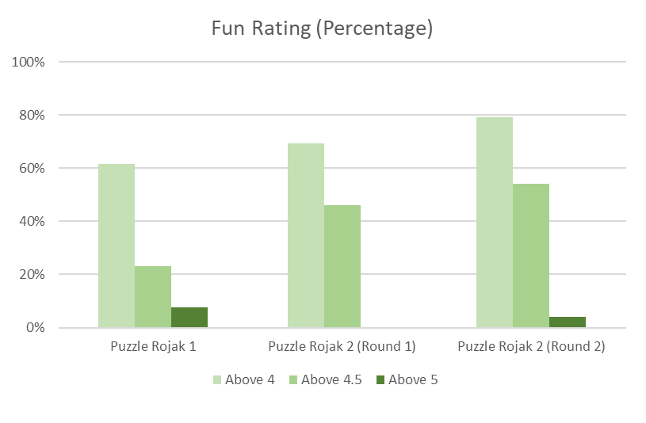Stats used for these graphs
| Metric | Puzzle Rojak 1 (/26) | Puzzle Rojak 2 (Round 1) (/13) | Puzzle Rojak 2 (Round 2) (/24) |
| Average fun rating | 4.00 | 4.25 | 4.49 |
| Highest fun rating | 5.14 (Drop Tower) | 4.85 (Crossword) | 5.09 (I Know My Patterns) |
| Lowest fun rating | 2.7 (Jetty Creatures) | 2.6 (52 Instructions) | 3.57 (Connect the Dots) |
| Average difficulty | 3.37 | 2.58 | 3.76 |
| Highest difficulty | 5.00 (Drop Tower) | 3.79 (Selective Sounds Detection) | 5.34 (Jenga) |
| Lowest difficulty | 2.08 (Baywatch) | 1.32 (Pulau Ujong) | 2.14 (Taskmaster) |
| Number of puzzles with fun rating above 5 | 2 (Drop Tower, Dock) | 0 | 1 (I Know My Patterns!) |
| Number of puzzles with fun rating above 4.5 | 6 (+Go-Karts, Battleships, Concert Stage, Seashells) | 6 (Crossword, Knaves and Knights, Pig-Tac-Toe, Ups and Downs, Fast Time, Find Waldo) | 13 (Game Theory, Colors, Segmented, Six Flags, 东西, Taskmaster, I Know My ABCs, 52 Spaces, Disney, Zebra, Measuring Kurrent, Jenga) |
| Number of puzzles with fun rating above 4 | 16 | 9 | 19 |
Comparing to the results we got in Puzzle Rojak 1 to those in Puzzle Rojak 2, the average puzzle difficulty has actually fallen, and the fun rating has significantly increased. Puzzle Rojak 2 did amazing! (Also it is really funny that Drop Tower (the original) and Drop Tower (Puzzle Rojak 1) were both originally written for the answer SUFFERING PROCESS and both were rated the hardest in their hunts)
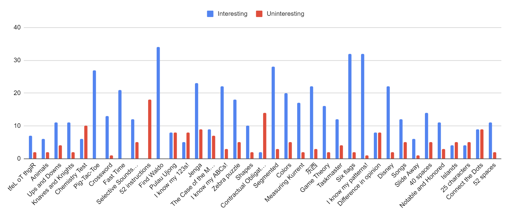In addition, we wanted to be able to capture what teams really took away from the hunt, and we felt in Puzzle Rojak 1 that the post-hunt survey was not very effective (we only got about 50 responses). As such, we created a post-hunt discord as well, to allow teams to discuss the puzzles, and hear about the parts of the hunt that teams enjoyed as well as potential pain points. We think the post-hunt discord worked out really well, and we managed to capture more feedback through this channel. The graph above captures roughly the general sentiment of puzzles based on all comments via all channels of feedback. We use the word "interesting" here because this feedback is more representative of what people appreciative about the puzzles, and includes comments about puzzle design and intent.
Looking at all the feedback, in round 1: Chemistry test, I Know My 123s and 52 instructions seemed rather long. In round 2, Contractual obligation posed a lot of issues to teams struggling to learn bridge. Jenga, Difference in Opinion and Connect the Dots were pretty grindy as well.
At the same time, almost all puzzles were well remembered, and were mentioned by various teams as being standouts (The only puzzle nobody mentioned liking was 52 instructions). It was great to see that the vast majority of our puzzles were interesting and enjoyable. The puzzles that received the most praise in round 1 were: Find Waldo, Pig-Tac-Toe, Fast Time, Crossword, Selective Sounds Detection, Knaves and Knights and Ups and Downs. In round 2, Six Flags, I Know My Patterns!, Segmented, Jenga, Disney, I Know My ABCs!, 东西, Colors, Zebra Puzzle, Measuring Kurrent, Game Theory and 40 spaces were the standouts. It was great seeing our various ideas be cited by various teams as being their favorites!
Just a quick word about puzzle variety here, Jenga was almost definitely the hardest puzzle in this hunt, for how early it was unlocked it got very few solves. And it was both praised for the different types of deductions required to solve the logic puzzle and bemoaned for how long it was, by many teams. We saw at least one team’s sheet cursing at Jenga in all caps. On the other hand, we got very effusive praise from multiple teams, including this very kind message:
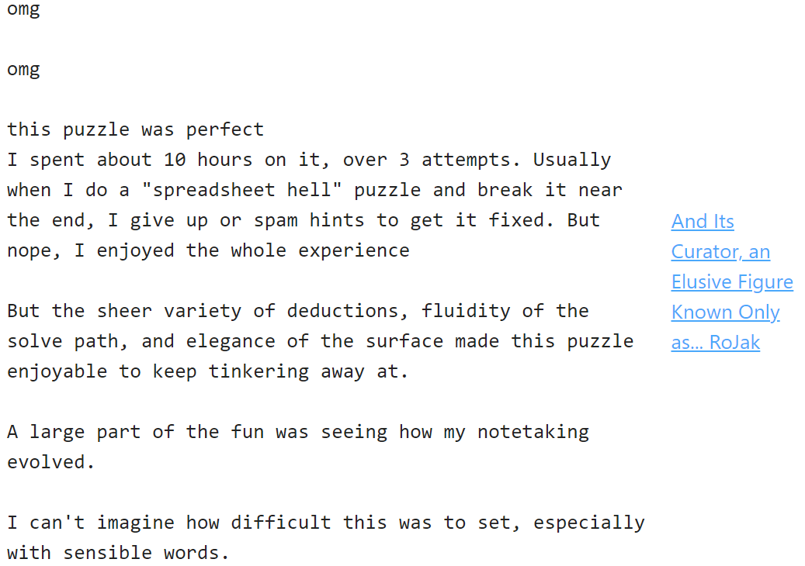
Our hunt is written in a way to maximize fun for everyone, hopefully everyone came away from the hunt with some puzzles they really enjoyed solving. What this means is that there will also inevitably be some puzzles teams may enjoy less. All hunts will have some degree of flexibility before unlocking metas, and teams can freely choose which puzzles they choose not to touch (with a ten foot pole).
The graphs below shows the post-survey thoughts from participants on the fun-ness of the hunt as well as the difficulty. Most teams seemed to expect this level of difficulty, which means both that the hunt was pitched at an appropriate level and also that our pre-hunt difficulty estimates were fair. Most people seemed to like the hunt as well!
| Citius | Altius | Fortius | Communiter |
| Jenga (54) | 40 spaces (36) | Contractual Obligation (33) | 52 Spaces (49) |
| Difference in opinion (7) | Game theory (15) | 25 Characters (12) | Connect the Dots (16) |
| Slide away (6) | Notable and Honored (14) | Measuring Kurrent (11) | Six Flags (4) |
| Songs (2) | I Know My ABCs! (3) | Islands (9) | Disney (1) |
| 东西 (1) | Colors (2) | Taskmaster (5) |
We kept track of the last puzzle to be solved in each round for the top 70 teams (to get a good sense of teams that both used and did not use hints). Note that this does not say anything about whether these last puzzles were backsolved or forward solved, and there are at least couple of instances where a Communiter puzzle was sidesolved/backsolved before unlocking the meta. 52 spaces being the least solved for the Communiter round was probably partially because 40 spaces was the least solved in the Altius round, even though it was potentially the quickest puzzle in round 2. 40 spaces being the least solved in the Altius round was probably because it was intimidating to start, and being unlocked later definitely did not help. The hardest puzzle in this hunt was definitely Jenga, so great job to any team that did finish that. In general, we saw a great degree of diversity in terms of the last solved puzzle, which was nice to see. We are also very proud to see that multiple teams managed to solve I Know My Patterns/Six Flags before Disney was unlocked.
It was also very interesting to see different teams approach this hunt in different ways. Just in the first 3 finishers alone, ⚯ MISSING PERSON'S GLASSE—WAIT, AGAIN? unlocked and solved the Communiter meta first out of all the Round 2 metas, while in the end, it's a dictatorship and whoever creates the team decides the name had the 3 other Round 2 metas unlocked before even solving a single puzzle in the Communiter round. We liked giving teams a bit more control to their solve order, and felt this turned out really well.
We also have some specific puzzle discussions.
Ups and Downs: It turns out that if you start counting the first dice roll at the end of the word START in the grid, you can finish at the END with the phrase: SANNYBARD OF SNAKESHEAD. Thank you to Our Mohs Scale Goes to 11 for bringing it to our attention. In testsolving, the major dilemma was between whether to start off the grid or on the first S, and teams generally did not face issues. To fix this issue, we changed a couple of cells in the grid to make it clearer this cluephrase was rubbish, and also added a flavortext to the puzzle. Sorry for missing this in testsolving!
52 instructions: This was the only puzzle that was rated as not so fun, and was also the only puzzle that nobody praised explicitly. Discounting the fact that it was for a Communiter round puzzle, as an idea, it was not as interesting as everything else, and was also very grindy. The extraction of semaphore was also not interesting, as compared to say if we described forming letters in some other way. Too many teams also missed the Simon Says aha, which is definitely a puzzle design issue.
Contractual Obligation: I've spent lots of time deciding how much information regarding scoring/team game rules to provide in this puzzle. Ultimately, the topic is niche, and solvers would have to do research to varying degrees, so I settled for leaving two links there at the expense of spoiling the "these drawings depict bridge scores" aha. The first link on scoring would still allow solvers to determine the encoding of doubling/vulnerabilities in the drawings themselves, while having those fields in the calculator helped with letting these solvers know that this information exists and is necessary. In retrospect I probably should have self-written some rules on team game scoring and replaced the second link with it as many teams got tripped up by this and it wasn't a fun aha to be had anyway. Also, the answer comes out directly from a nutrimatic query, so the only non-bridge part of the puzzle (ordering) can be completely skipped if the scoring was done right, which wasn't ideal.
52 Spaces: It turns out this puzzle had at least 4 different red herrings. There is a game called Megamonopoly which coincidentally also has 52 spaces on its board. There are 22 properties on a Monopoly board. Blank spaces in the flavortext made some teams go down a Taylor Swift rabbit hole. And 52 is also the number of cards in a deck of cards. This puzzle could have done with stronger nudging to clue the cryptic crossword setup. One particularly interesting feedback we received suggested that we could have made the background of all the pages black. Something in the flavortext hinting that the blank spaces referred to crossword spaces would also have helped.
Miscellaneous
Hunt etiquette It pains us to have to even talk about hunt etiquette, but we have received rather nasty and upsetting comments and hint requests during the hunt. To be clear, we are talking about just 4 teams, so just a few bad eggs, but we think it is worth bringing up. Puzzle hunts are, for the most part, free for participating teams. We host hunts to benefit the hunt community. The time we sink into creating a hunt far outweighs the amount of time spent by any team doing the hunt, and we are very much human after all. Please be nice(r).
To be clear, the vast majority of negative feedback is perfectly fine. The most useful kind of feedback is if teams detail why they got stuck or did not like a puzzle. However, when teams start going into the territory of "Everyone will hate this puzzle" and hurling insults, there is a line to be drawn there. (We also did get a rather ambiguous one that could have been construed as very mean, but it could have been written in the spirit of jest, it is rather hard to tell through text) Such comments are hugely demotivating and simply not nice. We would like to emphasize that the most negative comments are for generally well-written puzzles (in our opinion, and the majority opinion), so if you think you went overboard on 52 Instructions, you can breathe easy 😝
Errata We once again had more errata than we expected. Quite a few of these are smaller formatting, counting issues which occurred between changes, which was unfortunate, but a bit inevitable given the size of the hunt and limitations because of the size of our factchecking team. We do think the number of testsolves we did were sufficient in this regard, and that most of these errata did not detract from the puzzle solving experience in this hunt. However, there were some larger issues as well, discussed in the individual puzzle discussion above. Ideally we would have caught all these issues in testsolving, but we are happy that the puzzles were generally fair for solvers.
Timezone We also did notice teams getting confused by the timezone of the hunt. We forgot to change it from Puzzle Rojak 1, so once again we got plenty of questions about the start time. We’ll use PT or GMT or something else in the future and avoid starting at midnight/noon if we ever do run another hunt!
Accessibility It turns out that at least 2 teams in China (and likely a couple more) had issues viewing Google drive links, and accessing what3words. We did try to use more universally accessible sites after the problems with Media Studio in Puzzle Rojak 1, but unfortunately did not account for Google drive and what3words issues still. We did manage to help the teams that reached out with bridging the information gap, but there were some teams who likely still faced issues. We did try pretty hard to use more universal sources this time, and it was unfortunate this issue still persisted for a small minority of teams, sorry about it! We do recommend all teams facing issues at parts of the puzzle to email us, and will ensure to add that to the rules for any future hunt we might run.
Answer submission policy This table shows the top 70 teams' maximum number of incorrect guesses for a single puzzle in the hunt (excluding Notable and Honored, which we expected more guesses in). The increased guess count (expectedly) led to some wild guessing, including quite a few teams trying to backsolve the Communiter meta without it having unlocked (to varying degrees of success). That said, the number of teams asking for more guesses actually increased from Puzzle Rojak 1 to Puzzle Rojak 2. If we ever run another hunt, we will likely choose a number between 10 and 15 guesses. As to the intermediate cluephrase confirmations, we think this helped, although we have had no feedback on this at all, so it is hard to tell how useful it was in practice.
Hints Puzzle Rojak 2 received more than 2300 hints through the website, and another 400 hints via email. That is an extremely large amount of hints for 6 people. If we do run another hunt, we will have to likely either scale back the number of puzzles to reduce the number of hints we get, or have to switch to some sort of partially prepared hints. (As an aside, I (Jon) don't love prepared hints. They tend to end up spoonfeeding the most interesting steps, and are just too easy and tempting for teams to just take. On the other hand, if teams can only take a limited number of prepared hints, then teams will feel bad if they end up getting a hint on a step that they are not stuck on.) With the 3 weekend hunt timeframe, most teams comfortably stayed under the hint limit this time, which was nice to see. However, a small minority of teams really pushed the email system, and while we do love to help teams, at some point we did have to redirect teams to submit a new hint for the puzzle. Some teams ended up with more than 50 hint interactions! We could even this out potentially by only allowing 1 outstanding hint request at a time and not allow email hints, as we felt overwhelmed with hints at times. The 3 weekend did not really affect hint policy, we noticed a slowdown in hint requests in the last week, but it did prolong the time we were burnt out for.
The top hinted puzzles in this hunt were:
I Know My ABCs - hinting on finding all 7 alphabet sets, finding numberlink in the grid, solving the numberlink, and extraction were all problems for teams
Where’s Waldo Now - hinting on figuring out how the puzzle answers relate to the answers in Puzzle Rojak 1 as well as ordering were both issues
In general though, hint interactions were really nice and fun, it was great to see everyone's working sheets, and laugh at all the funny hint submissions!
Tips for aspiring hunt writers
Jon: For smaller writing teams out there writing a large scale hunt, give yourself more time. Having hard deadlines is not good, and we say that as a team who gave ourselves pretty tight hunt dates for 2 hunts in a row.
It is also important to have more testsolves, it’s far better that 10 more people cannot do your hunt live than 500 people do a puzzle that could have been better written. In particular, ahas that seem cool but are actually too hard for your target experience of solvers to realize what they need to do are incredibly frustrating to solve. Puzzle Rojak has set our target experience level of solvers below those for the larger hunts, and we strived to tailor the difficulty of puzzles to match.
As a tip for individual puzzles, perhaps consider what will make someone love your puzzle. It is relatively easier to write a standard puzzle, but I believe that it is more important that 1 person loves your puzzle than 100 people like your puzzle. I like to think some solvers of Puzzle Rojak 1 still remember some of its puzzles, despite it happening 2.5 years ago (at least 1 team reached out before the hunt saying they were trying puzzles from Puzzle Rojak 1, and really liked Go-Karts, which was really cool!). For both Puzzle Rojak 1 and Puzzle Rojak 2, we started with a few solid puzzles that we expect will be loved as key highlights of the hunt, before committing to the hunt.
That said, if you are passionate enough about a topic, odds are pretty decent that someone else will enjoy that same topic and enjoy a puzzle about it too. I personally really loved Game Theory, which combined many elements I personally knew about and liked. I tried to add in my inspiration for the various puzzles in the Author’s Notes, hopefully some other puzzle writers will find something useful and craft puzzles from them! Many of my ideas stem from other puzzles I have tried in the past, or ideas that I have not seen yet that I wish were written about. In the solutions, I have also tried to explain what I hope a solver’s thought process would be when doing these puzzles, and the clues left behind to help guide solvers towards solving the puzzles.
Different people are also better at writing different things. For instance, I really thought I would be better at writing shorter/easier puzzles than I actually was. Xue Heng wrote far more interesting Round 1 puzzles than I did, and really elevated the Round 1 puzzles to a whole new level.
Xue Heng:
As an inexperienced writer (before Puzzle Rojak 2, Internet Cafe from Puzzle Rojak 1 was the first and only other hunt puzzle I have ever written), my first puzzles for Puzzle Rojak 2 were all about topics I’m really interested in: Game Theory, Contractual Obligation, as well as Knaves and Knights. I’d say that this gave me momentum and some practice in writing hunt puzzles, so I’d recommend newer writers to start with their favorite topics if they don’t know where else to start. I’m also very thankful that Jon tanked pretty much the entire Communiter round, which allowed me to write puzzles freely without facing the additional constraints of round gimmicks.
Many of my ideas come from associating random things which share structural similarities with each other, kind of like what some escape rooms do. For example: Nash Equilibrium and Braille, Pigpen and Tic-Tac-Toe, Musical notes and Seven Segment Display, Word Search and Snakes and Ladders.
One thing I really focused on this time was making my puzzles more approachable and less opaque for the average solver - it didn’t cross my mind at any point that I had to increase any puzzle’s difficulty; instead, I tried to nerf puzzles where I can to reduce the probability of teams getting frustrated. After all, authors usually perceive the difficulty of their own puzzles to be much lower than how solvers perceive it, so I believe that it is best to err on the side of making puzzles easier than harder.
The future
Writing a puzzle hunt is a huge labor of love, time, commitment and energy, and wanting to write a hunt with solid puzzles with fun ahas and be reasonably short and fair takes a lot of time. We are definitely going to be taking a much needed break first before we reevaluate.
My (Jon) puzzle ideas list is down to less than 5 puzzles, and particularly given the story, don’t expect a Puzzle Rojak 3 till 2028 at the earliest!
Major spoilers ahead I (XH) have finally experienced the ups and downs of running a puzzle hunt, from editing puzzles which sometimes feels as pain(ful) as taking a chemistry test, to watching my hopes of testsolving teams solving certain puzzles slide away, to sitting tightly and watching nervously as other hunts go by in hopes that my puzzle ideas do not clash with them like it did before. Now that I’m free from any contractual obligations of puzzle writing, I’d like to put the time I have segmented out for puzzle writing every week to pursue my phd research in game theory, and to analyse the scientific reasons why aircrafts crash (most likely due to bad inclement weather). I still have some 东西 that I would like to write about in my puzzle ideas list, and moving ahead, I aim to write more puzzles which contain less than (5^⅔)cubed characters. ~does a little dance~
Credits
Organizing team. Jonathan, Xue HengGuest writer. maxwheel
Internal testsolvers. Celestine, Jack Ho, Wilson, maxwheel
Team Copypasta. Bob, Dawson Do, Grant, metapzl, Ryan Thomas, Samuel Lam, Tsuki
17th Shard. Adeline, Ella, Jonah, Thomas/Sart, Tim/Soni, Kaz, Olga
Cardinality (1). Akira Baruah, Alison Chang, Joshua Chan, Melissa Yuan, Peter Vera, Shuxin Zhan, Tim Miller
Cardinality (2). Charlie Shen, David Lin, Kevin Lin, Max Chang, Ryan G, Ryan Liu
Art. Kit Chow
On top of testsolvers from Puzzle Rojak 1, we also enlisted the help from the writing teams of Shardhunt and Huntinality (2 other mid-sized hunts in 2023) for testsolving. All of our testsolves gave us valuable feedback and were incredibly helpful! We are really grateful to all our testsolvers for their suggestions to help make this hunt better!
2 small examples of changes testsolvers helped with in this hunt include: having the James Patterson series in The Case of the Many Blanks go up to at least 10 books so that solvers get ## to confirm that the # symbol represents numbers, and giving the dimensions using A and B in 40 spaces to both hint that the exact page dimensions are not important but also to clue that some assembling is needed. These changes, large and small, definitely helped create a better and fairer hunt experience!
Appendix
At the top of the wrap-up page, you can also access the finishers' progress charts, bigboard, and puzzle stats.
Taskmaster submissions
Submissions have been compiled here. We received many cool and interesting submissions, and we loved seeing them! Thank you for completing all these tasks, and for all these high effort submissions! Hope that doing the task was as fun for everyone as it was for us watching you do them!
Interesting moments
Interesting answer submissions.
Find WaldoGGWP – Sloopertroop
52 Instructions
AAAAALLLLLVIIIIIIINNNNNN – decrypt this hunt
Where’s Waldo Now
ALIFEINPRISON – Multiple teams (Many many teams seemed to want to see Waldo in prison hmmmmm)
ANNUALSKITRIP – Stressful Shape (I wish I could go on an annual ski trip too!)
Jenga
HELPMEHELPMEHELPMIVESPENTHOURSONTHISHELPMEHE – weeklies.enigmatics.org
I Know My Patterns
ASHOWTIME – Multiple teams
ITWASHOME – Multiple teams (Yes yes keep anagramming keep trying we see you xD)
Communiter Meta
GUILT – Multiple teams (Ah yes, we guilt trip the Olympians so that they become more together)
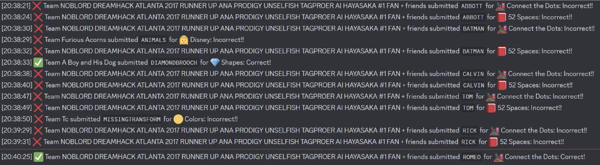 They were very much not alone, all of the teams trying to backsolve Communiter you know who you all are! We just chose this one because it was both egregious but also successful.
Looking Back, Looking Forward
CMONLOSINGANYTHINGISALOSSYOURMETAANSWERMAKESNOSENSE – Isotopes Puzzles United
THERESNOLOSSINLOSINGALEG – Multiple teams (Wait what?!)
Interesting hint requests.
Selective Sounds Detection (Builders' Guild)
>I feel like there's just something obvious I'm missing with this puzzle.>Sheets link: xxx
>I've identified the five songs (Canon in D, Oh Susanna, Eine Kleine Nachtmusik, Deck the Halls, and Edelweiss), and they match the enumerations.
>I've been trying to parse the flavor text as the key to the extraction. Despite initially being excited by seeing "DO" at the connection between "Canon in (D" "O)h Susanna", none of the others (RE, FA, SOL, LA, etc.) are found.
>I also tried looking at standard musical notes, as in A through G. It feels purposeful that they all draw from just A,C,D,E and omit B,F,G. I admit I tried a couple words built from ACDE just in case.
>I tried indexing into the songs based on how many notes appear in their titles (NHKTL) and how many unique notes appear in their titles (NONKD) but neither work.
>I also noticed that the number of notes in each song is a unique number 2-6 (3,2,6,5,4). While that didn't work for indexing, it could perhaps order them, but the song titles aren't in alphabetical order, so it doesn't seem like we'll need to re-sort them. Nonetheless, it hasn't helped yet.
>I've tried to compare the actual notes in the score with the notes in the song titles, but Canon in D has the full octave, so there's not one missing.
>The big thing pulling at me is that it's just "ACDE" out of the 7 notes. I've tried running variations with Qat, but no luck. The other thing nagging at me is the title and end of the flavor text. "Selective Sounds Detection" and "Segments of Musical Display" both seem very intentionally worded to draw attention, but I can't figure out what I'm supposed to interpret from them. I considered the acronyms SSD and SMD but don't see a connection. Nothing relevant seemed to come up from searching Google either. I also had hoped the length of this request would rubber duck me into an a-ha, but alas!
>A nudge would be appreciated!
We're including this one simply because we loved answering hints from this team in particular (many many other teams are all really nice, don't get us wrong). Many hunts nowadays mention in the rules to provide as much detail as possible on your progress, but many teams just...don't. And well really that is up to each team's preference, but in case some teams out there wonder about how they can make their hints better, this is a textbook example.
Giving a sheet, first and foremost, in so important. Some hint requests don't make sense, and it is sometimes hard to place where a team's progress is at for a particular puzzle. With a sheet, we can always take a look if necessary, and oftentimes, we do! (If the puzzle is really long, directing us which sheet and which cells to look at would be useful too, at least 1 sheet had additional work in another tab at the bottom, please don't make us play Find Waldo to find your progress!)
Giving some details on what you have done for the puzzle, as well as some things you have tried at the point where you are stuck, is also very critical. Oftentimes a team actually has the right idea (such as this one!) and just needs help sifting out which one of the many ideas is correct to investigate further. For ahas that are more interesting especially, as hint givers we don't want to spoil the aha if possible, and if we know your team is already thinking along the right track, we can simply tell you what to look at. Help us to help your team have a better hunt experience!
Jenga (memeteam)
>Hi, does physics need to be considered, i.e. is it allowed to have only one piece on the side in one row? ;)Our response:
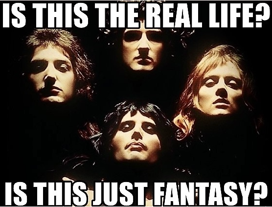
I Know My ABCs! (Spin My Hovercraft - because it wouldn’t be them if they didn’t rhyme their hints)
>assembled alphabets at least, its actually amazing
>but barely barreled past, befuddled, blinded, baseless
>can't comprehend, completely cooked, complexity seems crazy
>detailed, derailed, deranged, done doing dumb deeds, dang it!
>enough! extraction hell abounds, while we are stuck in rhymy mess
>for every answer many questions, for effort - failures (more, not less)
>god bless my teammates' patience, and that they know the gashlycrumb,
>*h-shen't* games, french-coded stuff, and something by tom thumb?
>i'm sure this made sense, but now what? we idle, stuck in thought
>just walk along the lines? but how? jump? run? orthogonal or not?
>keep going? sure, i will. what's with two idas? two quebecs?
>looking at them like "we have to bifurcate this mess"?
>might try, but then again, not very likely to succeed
>or i can just request, 'bout time we *r-sked* you for a hint
Our response:
Oi! New puzzler?
And so you think you're able
To solve this mess by being so calm or so patient
You will soon see
There's no escaping tragedy
And even
If you put in heaps of effort
You're just wasting energy (nah not really)
'Cause this puzzle involves knowing ancient groups of things
I have suffered in this jail
Stuck with this cage of letters
This living hell!
But if I try, I can remember
How all these sets truly ended
And to give this grid a once-over
And notice that the last column looks very a-ppealing
Like you, I was curious!
So innocent, I asked a thousand questions (please dont ask us a thousand), but unless you want to suffer
Listen up and I will teach you
A thing or two
You listen here, my dear
You'll be cooked so severely if you want to bifurcate, and if you try it will be double
You should stay out of trouble, and remember to be extremely careful
Why?
(Why?)
Why? Did you hear what we said?
Make sure to map A to Z-ed!
P.S. You missed a line for the N
I Know My ABCs! (Fish and the Monkeys)
>A bitty clue definitely exists for giving help - I just know (like my nice, open, patient query) returning some tips undoubtedly would xemplify your zeal.They did miss the letter V though LOL
Contractual Obligation (decrypt this hunt)
>heya - we need a little help crossing this bridge!Segmented (broken hearts club)
>oh well that is embarrassing i typoed waning and waxing that might turn my :) into a :(东西 (ProgChamps)
>Mostly we're just stuck on what "map to letters" means and would appreciate some guidance. After all, we don't want to 守株待兔 and we're sure you didn't 画蛇添足. 亡羊补牢, so we might be 狗急跳墙. But you will prove that 老马识途 and help us 畫龍點睛.东西 (Builders' Guild)
>I also tried mapping the animals literally to directions, since there are 24 (!) navigational directions and the animals are mapped to 12 of those, and taking those characters and seeing what phrase resulted. Well, turns out if you do that, it translates to "There is something ugly but no pubic hair, Xuhai Tatsumi", which is absolutely wild.Six Flags (Stumped and Furious)
>"We are reasonably good at reading crap, and we think we have decoded some of the crap, but even after many hours sorting through Six Flags rides, we are a bit stumped. We could use some confirmation and then maybe a nudge?"Our reply ended with “I applaud your ability to read "crap", but you don't need to guess which strings are which ride's altered name. Each ride's name was altered using specific rules. In fact, considering your crap-reading proficiency, I am confident you are already familiar with these rules!"
I Know My Patterns (Multiple teams)
>We clearly do NOT know our patterns.40 Spaces (CRUCIVERBALISTS)
>We have back solved this with the answer “WELD”, but I think we need a hint on how to get started on it so we can tackle 52 spaces.”Truly a show your work moment! :)
Notable and Honored (Spin My Hovercraft)
>We've found most our people,
>Smooth operators all
>Except perchance 8
>CORK's not human? lol
>JAMES NOTTINGHAM and
>HANS CHRISTIAN ANDERSEN
>ANDREA BOCELLI, that
>HENRY D THOREAU human
>MIRAND LAMBERT, REMBRANDT, of course
>TAYLOR SWIFT graces us (bereft of 'er white horse)
>BARBRA STREISAND at nine
>SALVADOR DALI seems fine
>ARIANA GRANDE's in line
>And with NORMAN ROCKWELL we'll dine
>ANDY WARHOL, AYN RAND, and VICTOR HUGO
>And now, perhaps, our rate of solving does slow
>We've found they've all got operators in stow
>AND, OR, NOT, so to the checker we go!
>JAMES stands alone at one so we ought to start there fam
>(NOT tingham, NOT james tingham, and [james NOT tingham])
>Yielding BCDEFJKLNOPQRSUVWXYZ, BCDFKLNOPQRSUVWXYZ, and EJS
>All from the checker gets us "nays".
>And the others - the doubles - what to do there?
>While each one is indeed possessed of a pair
>5 ends with streisAND with nothing af-ter
>Need we the NOT/AND/OR from the title's care?
Our response:
There once was a man from Turkey
who was truly a little quirky
At 16, he relocated
"Summation" he painted
His name? Ashile Gorky!
There once was a team from Singapore
who set a puzzlehunt, oh what a chore!
Notable and Honored you see,
Need these famous works as inputs, do you get me?
The people themselves are just used as logic gates, nothing more!
52 Spaces (Hee-Ho)
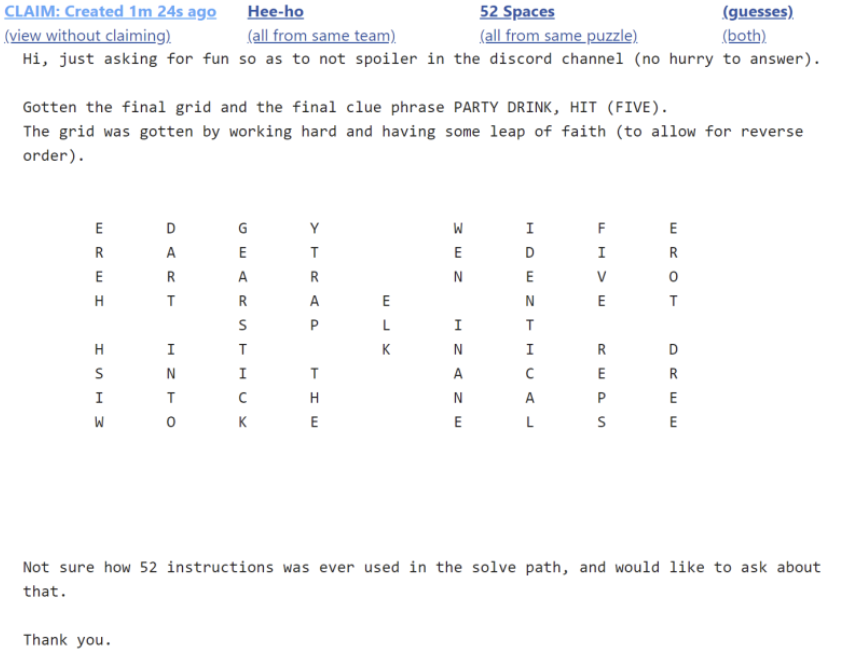 I (Jon) believed that it was possible to do this before the hunt, but seeing a team actually do this was truly something!52 Spaces (puzzles too hard :c)
>i think the following will be stripped but have 52 spaces here just for funsies52 Spaces (decrypt this hunt)
>If we ask three times in a row about correlation, do we go directly to jail?52 Spaces (Stumped and Furious)
>Hi Team Rojak,>Did you miss us the last few days? lol
For context, team Stumped and Furious took like a 7 day hiatus in the middle of the hunt lol.
Citius (puzzles too hard :c)
>oops we are completely stuck despite the flavortext's warnings :cInteresting comments.
Animals (WE HAVE NO IDEA)
Elephant! Oh, I meant elegant!I Know My ABCs (broken hearts club)
its abbeey, marioTaskmaster (1e30plates)
Your response was quick enough I assume you have auto-reply; if I'd known that, I would have instead submitted an email with just "I am faking your auto-reply into thinking I have completed a task (https://taskmaster.fandom.com/wiki/Fake_something)"Post-hunt feedback (Abysmal Chunks)
>Looking forward to next year!???!!! Sorry to dash your hopes but uh Puzzle Rojak will not be happening again next year for sure lmao maybe 2028 xD
Interesting sheets.
Disney (Solve@NUS)
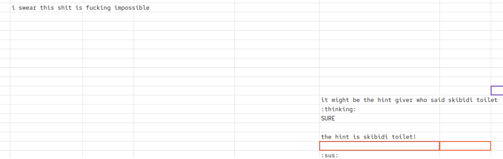 Very surprising it wasn't for Jenga!Altius (Constructed Adventures)
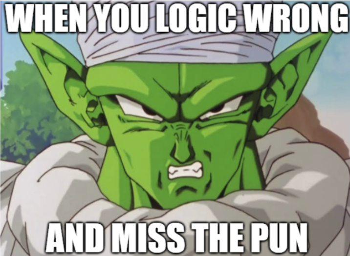When they extracted LEAKCCOLO for Altius because they extracted from the wrong cell and had to hint it.
Whole sheet (🃏)
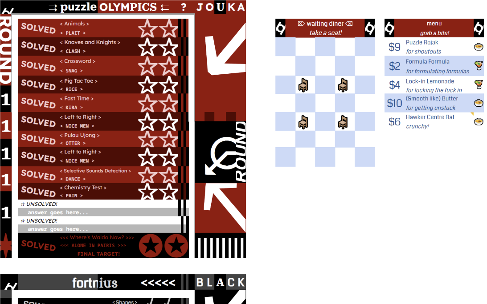 Very cool persona-themed sheet, even comes complete with a teeny indexing puzzle!Interesting stories.
Team Sam: Busboy Incroyable: Man shame on y'all for making me watch Cinemasins (but I'm subtracting a sin for letting me enjoy Cinemawins which I've never really checked out)
Rising Heat of Salad Dressing: we sniped you on taskmaster :))) (Yes, yes you did lol)
bOUOkmark:
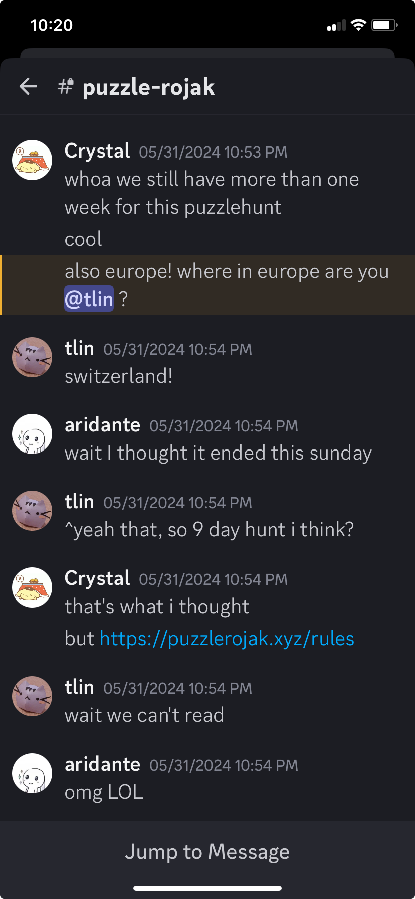
(The hunt length was mentioned a couple of times as really nice, and we are glad teams appreciated it!)
TFF: We actually got very unlucky while trying to solve 'Shapes' in the final clue... we got "appetizing bird making exquisite treasure five" and solved with "goose" which kinda poisoned our solve from there with how confident we were with it and our understanding of the transforms. I imagined that there's some other possible options for the other clues if you're unlucky enough to stumble into them. Don't think it's a problem in the puzzle, just a funny coincidence
Q&A
Q: Was reddot hunt the inspiration for the metameta
Jon and XH: Yes. We just found out through this question that we had both done that as our first hunt LOL wow that's a crazy coincidence. Turns out, REDDOT 2017 was the first puzzle hunt that we both attempted, on different teams too! We even knew each other by then, yet didn't know we were both individually trying to do puzzlehunts. Neither team got very far, but we both enjoyed many of the Round 1 puzzles. There are many good memories that we keep from that hunt. (Jon was on team weareyoung, XH was on team Lucky)
Q: I'm generally interested in what your writing process was like and how you stay motivated. Would also like to hear what, if anything, you decided to consciously do differently this time versus Rojak 1 based on feedback/lessons learned from that hunt.
Jon: For the second question, refer to the sections of Hunt Philosophy and Writing the Hunt above. For the first question, it wasn’t really a motivation question for me at least? I just wrote puzzles that came to mind, either from doing other hunts (like Rush Hour) or just from topics I am interested in. Some puzzle ideas just stem from the answers themselves as well, the Six Flags Communiter puzzle stemmed from me noticing that BLEW was a homophone of BLUE and DIAMOND BROOCH had a shape in it. From there, I connected that to maritime flags and the rest of the puzzle wrote itself naturally. With a long enough timeline, I personally did not feel rushed to write puzzles (if anything I was worried about puzzle ideas being sniped by other hunts). Metas and puzzles written earlier had a couple of extra rounds of internal testsolving, to make sure they were solid. I think with only 2 people writing most of the puzzles, we kind of keep each other accountable as well to make sure to get puzzles written and updated in a timely fashion.
XH: We started out in 2022 with sometime in 2024 as our target, so thankfully I wasn’t hard pressed to come up with many puzzles in a short period of time. I kinda just wrote puzzles as good ideas popped up from time to time, but certainly faced several periods of idea drought during the process. Since Jon had the experience from running Puzzle Rojak 1 while I did not (all I did was write the one puzzle), he handled almost all the admin and kept me on track with puzzle re-writing and updating to meet the testsolve deadlines, which I greatly appreciated. (Yes he’s a great taskmaster)
Q: Wanna go eat rojak sometime
XH: Sure, I'm based in Singapore, so we can have a chat over rojak if you'd like. Email us!
Q: What are your favourite places to see in Singapore?
XH: I personally don't think Singapore is a fantastic tourist destination; I don't have a favourite place per se. I'm quite a couch potato myself, mostly playing bridge, escape rooms (the best I've played are from the Netherlands), writing puzzles and doing game theory research, so perhaps I'm not the right person to answer this question. I do like the food though! (chicken rice, hokkien mee, kway chap, durian chendol etc)
Q: Any idea about the geographical distribution of the puzzlers?
Jon: We have no idea, we unfortunately did not embed google analytics like what Huntinality did so we don't know. But there are differently quite a number of Chinese-speaking teams, which surprised us.
XH: I briefly attempted a Chinese hunt before but gave up quickly (my command of Chinese isn't great but passable; enough to write 东西 at least); I might try again someday.
Q: Favorite Olympic mascot?
Jon: These 2! I'm biased xD
Q: Favorite set of 26?
Jon: As mentioned in the Author's Notes of I Know My 123s, Matilda.
Q: How did you come up with the theme 'Olympics' for this hunt?
Jon: Olympics was not the original theme. In case we do write Puzzle Rojak 3, we won't spoil our other ideas. I don't actually recall how Aki and I came up with the Olympics theme honestly, but one of us probably noticed that the last Olympic Games was held in 2021 and it would be a nice starting point for a Round 1, and we worked from there. We did brainstorm many other ideas that ended up not being used either. Our metas for instance went through multiple iterations, feel free to read through their Author's Notes for more about that. At one point, we were even looking at a Round 2 meta where all answers are not in english, but in a different language, that ended up being cut for being too difficult, which would have been completely sniped by this 2023 hunt meta!
Q: What was the point of the altius fortius... puzzle answers if we didn't really use it in the final meta? Is there a super secret meta meta puzzle we're missing?
Jon: We already used them in their metas! Not all metameta need to reuse individual puzzle answers, although we did in Puzzle Rojak 1. If we write Puzzle Rojak 3 maybe we'll hide a super secret meta meta puzzle. (Read Easter Egg in this one!) Who knows?!
Fastest puzzle solves
These solve stats are once again really unbelievable! It always amazes us how good teams are!
| Puzzle | Team | Solve time |
| Knaves and Knights | The C@r@line Syzygy | 8m 57s |
| Ups and Downs | in the end, it's a dictatorship and whoever creates the team decides the name | 7m 41s |
| Animals | Quintessential Quinceanera | 4m 25s |
| Chemistry Test | Edible Comestibles of /r/PictureGame | 8m 15s |
| tfeL oT thgiR | 🪀🦞🌮 | 2m 31s |
| Pig-Tac-Toe | weeklies.enigmatics.org | 3m 54s |
| Crossword | Quintessential Quinceanera | 5m 1s |
| Fast Time | The C@r@line Syzygy | 6m 36s |
| Selective Sounds Detection | huh? | 3m 32s |
| 52 instructions | ikan bilis 🎏 | 6m 57s |
| Find Waldo | Pepsimen | 3m 42s |
| Pulau Ujong | kwargers | 2m 46s |
| I Know My 123s! | Nibble Eat Snack | 11m 8s |
| Jenga | Isotopes Puzzles United | 4h 25m 46s |
| The Case of the Many Blanks | puzzles too hard :c | 15m 55s |
| I Know My ABCs! | ⚯ MISSING PERSON'S GLASSE—WAIT, AGAIN? | 41m 53s |
| Zebra puzzle | ⚯ MISSING PERSON'S GLASSE—WAIT, AGAIN? | 19m 9s |
| Shapes | Edible Comestibles of /r/PictureGame | 10m 6s |
| Contractual Obligation | Ember Island Puzzlers | 52m 43s |
| Segmented | 🥓🥓🥓Bacon Trendsetters🥓🥓🥓 | 22m 17s |
| Colors | Rising Heat of Salad Dressing | 24m 48s |
| Measuring Kurrent | The C@r@line Syzygy | 36m 47s |
| 东西 | Where’s Weili | 8m 32s |
| Game Theory | 🦓 | 23m 9s |
| Taskmaster | Rising Heat of Salad Dressing | 27m 32s |
| Six Flags | Snattlesnakes | 2h 29m 4s |
| I Know My Patterns! | Intervarsi-Teammate: Integral Domain Expansion Rings | 31m 50s |
| Difference in opinion | Cardinality 1 | 21m 59s |
| Disney | Kat Zipser | 15m 51s |
| Songs | The Wobs 🔮 | 14m 14s |
| Slide Away | i think the hot yoga thing is p good if we're still undecided on team names lol | 11m 39s |
| 40 spaces | Ember Island Puzzlers | 4m 52s |
| Notable and Honored | in the end, it's a dictatorship and whoever creates the team decides the name | 16m 19s |
| Islands | Sun Delays Rising Slowly | 27m 22s |
| 25 characters | pluru | 15m 25s |
| Connect the Dots | ⚯ MISSING PERSON'S GLASSE—WAIT, AGAIN? | 1h 19m 4s |
| 52 spaces | ⚯ MISSING PERSON'S GLASSE—WAIT, AGAIN? | 55m 15s |
| Where’s Waldo Now | The C@r@line Syzygy | 6m 43s |
| Citius | pluru | 20m 17s |
| Altius | Nibble Eat Snack | 12m 35s |
| Fortius | puzzles too hard :c | 22m 52s |
| Communiter | O-tak Otaks | 1m 8s |
| Looking Back, Looking Forward | Rising Heat of Salad Dressing | 7m 36s |